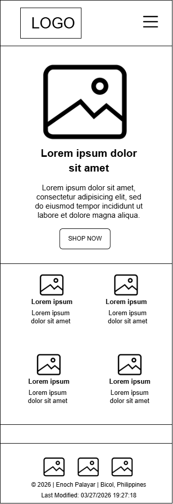
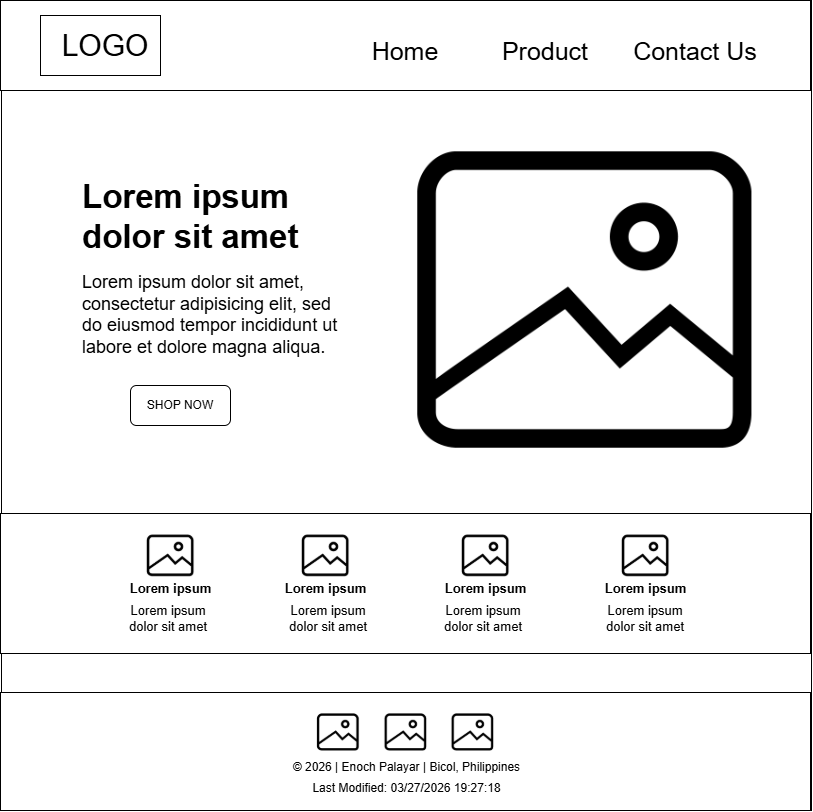

1. Site Name
The Belle’s Best Finds
The name "The Belle’s Best Finds" is designed to create a sense of discovery and elegance. "Belle" (meaning beautiful) targets our female audience, while "Best Finds" highlights the curated nature of our preloved inventory, suggesting that every item is a unique treasure.
2. Site Purpose
The primary purpose of this site is to transform a growing social-media-based online boutique into a professional digital storefront. It provides a structured platform to catalog at least 15 unique preloved items dynamically using a JSON-driven directory. This site serves to organize inventory for the seller while offering customers an intuitive, easy-to-browse interface that simplifies the inquiry and reservation process.
3. Scenarios
- "Where can I find affordable and trendy pre-loved dresses?"
- "How do I contact the seller about an item I like?"
4. Color Schema
Primary Pink (#D81B60): Used for call-to-action buttons and headers to draw attention to interactive elements.
Soft Blush (#FFF0F5): Used as a section background to create a soft, feminine boutique aesthetic without overwhelming the text.
Charcoal (#2D2D2D): Used for all body copy and technical details to ensure high contrast and readability.
5. Typography
Playfair Display (Serif)
Applied to: Headings (H1, H2, H3). This font was chosen for its classic, elegant feel that mirrors the "Belle" brand identity.
Josefin Sans (Sans-Serif)
Applied to: Body Text, Buttons, and Navigation. This modern, geometric font ensures that product details like price and size remain clear and legible.
6. Wireframes
Mobile View

Desktop View
